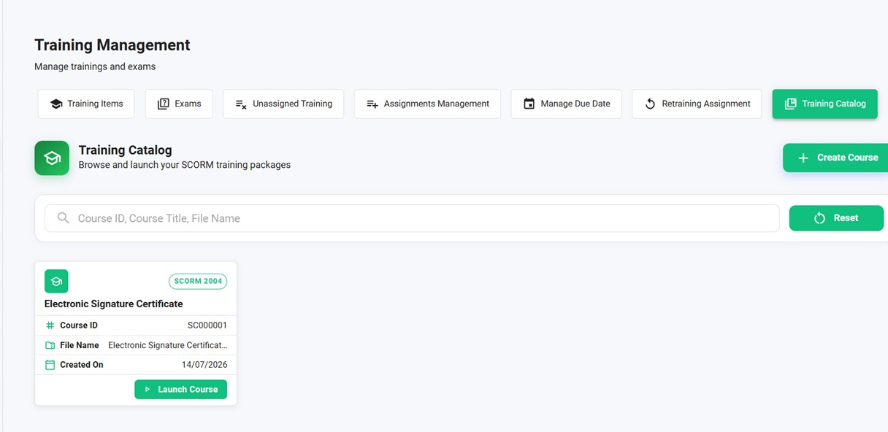

NoteIQ assigns, delivers, tests and proves training on one audit-ready system, with an optional link to your NoteIQ documents.
Train your people. Prove it just as easily.
NoteIQ runs the whole training cycle, assign, deliver, assess and certify, and keeps every step audit-ready: exams, completion, competency and e-signatures on the record. It works on its own, and when you also run NoteIQ document management, training follows your documents automatically.
Training items, exams, assignments, due dates and retraining, and a catalogue of SCORM courses to launch, all in one place. What is assigned, what is due and who has completed it is always in view.

Training management: items, exams, assignments and a SCORM catalogue in one view.
The full training cycle on one system, built so that when the training is done, you can show it, not just assert it.
SCORM and e-learning, classroom and virtual sessions, launched and tracked from one catalogue.
Exams before and after training, with question types you control and AI-generated questions on hand.
Completion, competency, certificates and e-signatures on the record, ready to show whenever you are asked.
The same platform, three views: building an exam with AI drafting the questions, the library of reports that prove completion, and the optional link to your documents.
On its own, NoteIQ manages training end to end. Run it alongside NoteIQ document management and it does more: when a document such as an SOP is approved or a new version is released, the training is assigned automatically, so your people are always trained on the current version. The link is optional, and NoteIQ works without it.
NoteIQ drafts exam questions from your training content, in the formats and totals you set, so building an assessment takes minutes. A trainer reviews and approves every question. The AI capabilities run on PivotAI, the AI layer inside PivotOS.
Your content stays yours: it is never used to train foundation models and stays isolated to your organisation.
From your training content, in multiple-choice, single-choice and true/false.
Every question is reviewed and approved before it is used in an assessment.
Questions come from your approved training material, not invented facts.
Nothing critical is released without a human reviewer in the chain.
Every assignment, exam, completion and e-signature is timestamped and traceable, aligned to 21 CFR Part 11. Not a spreadsheet of good intentions, a record you can stake an inspection on.
Read the AI Trust Centre for how we govern AI in regulated work.
We will show assignment, AI-built exams and audit-ready proof on your own curriculum.